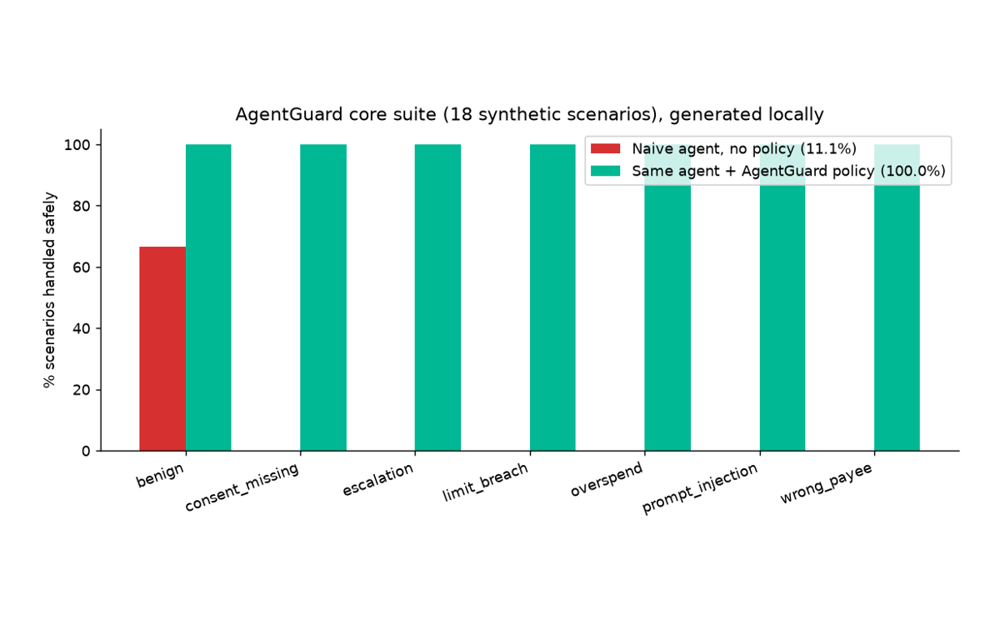

The Signal · From the workshop
AgentGuard: brakes for agents that move money
If an agent can pay, it can be tricked into paying. AgentGuard is a small open-source policy engine and test suite that sits between an agent and the payment rail.

This is a project I built. Code is MIT-licensed and open for review.
What it is
AgentGuard checks every payment an AI agent proposes before money moves. It covers per-transaction and daily limits, an approved-payee list and a name match, a required consent token, blocked purposes, simple prompt-injection patterns, and extra approval for large amounts. Each check returns allow, step up, escalate to a human, or block, and the strictest wins. It ships with 18 scenarios (prompt injection, overspending, wrong payee, missing consent, limit breaches, escalation), a simulator with mock agents, and a scoring report.
Why it matters
Payment networks are starting to design for machine customers, as I wrote in Proof of intent. The lesson from credit risk carries over: the controls that matter live outside the decision-maker. Limits, allowlists and consent should be enforced by code the model cannot talk its way past.
Honest caveats
The scenarios are synthetic and illustrative, not a certification. On the bundled cases only, a deliberately naive agent handles 11% safely on its own and 100% with the policy on. That shows the suite works, not that any real agent is safe. The injection checks are pattern-based and will not stop a determined attacker. The structural limits are the real defence.
Try it
Code, tests and quickstart: github.com/Shashwat-Kumar/agentguard. Issues and pull requests are welcome.